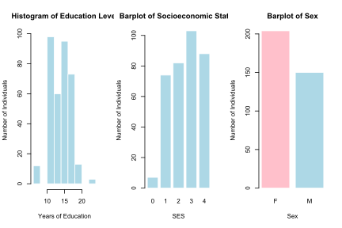
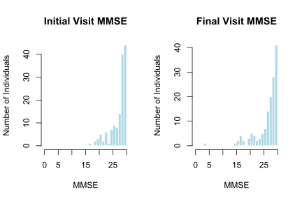
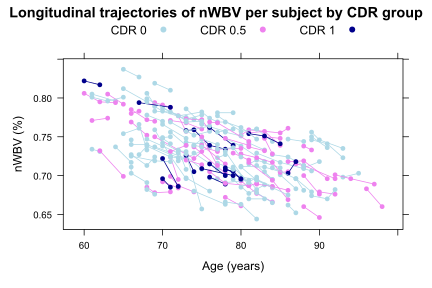
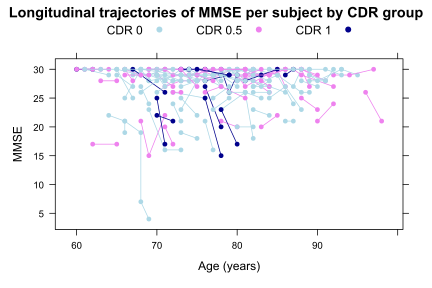
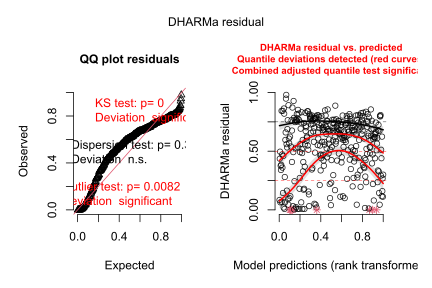
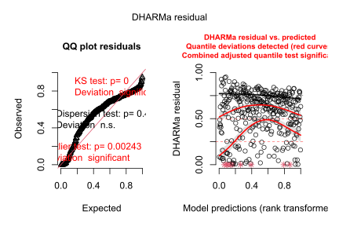
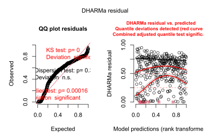
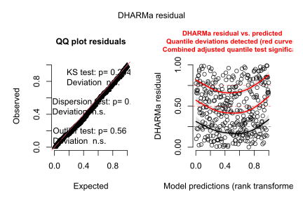

In [1], the authors analyze a sample of longitudinal data from the OASIS (Open Access Series of Imaging Studies, see [2]) dataset, consisting of 150 subjects between the ages of 60 to 96. Subjects are categorized by their CDR (Clinical Dementia Ratio), being either nondemented (CDR = 0), having very mild Alzheimer’s disease, (CDR = 0.5) or having mild Alzheimer’s disease (CDR = 1). The authors analyze the progression of brain volume atrophy in Alzheimer’s disease. In this report, we use the same dataset (retrieved from [3]) to study the progression of cognitive decline in Alzheimer’s disease using MMSE (Mini-Mental State Examination) score as a proxy for cognitive decline. We model MMSE using a linear mixed effects model on various predictors in the dataset for the purpose of examining features associated with cognitive decline, and in doing so we explore the limitations of mixed effect models on non-normal, heavily skewed data.
Clinical Dementia Rating (CDR) is a system used to stratify the severity of Alzheimer’s disease into stages. Stages include 0: nondemented, 0.5: questionable (or “very mild” as described in [1]), 1: mild, 2: moderate, 3: severe, and scoring is based on an interview with the subject, assessing impairment in the categories of memory, orientation, judgement and problem solving, community affairs, home and hobbies, and personal care [4].
The Mini-Mental State Examination (MMSE) is a test used to assess cognitive ability of patients with dementia or various psychiatric conditions. It has been found to accurately distinguish patients with cognitive deficiencies from those without, and MMSE scores correlate with scores in other standard cognition tests [5], making it a suitable proxy for modelling cognitive decline.
We will model MMSE using features in the dataset to assess predictors for cognitive decline. Determining strongest predictors for cognitive decline allows for earlier diagnosis of Alzheimer’s disease. Earlier diagnosis allows for earlier treatment, slowing disease progression and reducing financial strain on healthcare systems [6]. We will build a linear mixed effects (LME) model. LMEs are effective at modelling data that is “clustered”, such as longitudinal data; in this case, the “clusters” are the individual subjects, each having multiple visits. LMEs combine “fixed effects” and “random effects”, hence the “mixed” part of the name. Fixed effects are effects that are assumed to be consistent across individuals while random effects are effects that differ for individuals, allowing us to account for the fact that different subjects have different baselines. LMEs are typically most effective when the response variable is normally distributed. With our data, we will see that MMSE is not normally distributed, and we will explore the limitations that arise and attempt to improve our model with various diagnostic methods. We will discuss possible alternative models that offer some hope of addressing these limitations.
Features of interest in the dataset for our modelling include Subject ID (Subject.ID), visit number (Visit), sex (M.F), age at visit (Age), years of education (EDUC), socioeconomic status (SES), MMSE score (MMSE), CDR score (CDR), and normalized whole brain volume (nWBV). All subjects are right handed. Subjects were screened to ensure exclusion of subjects with physiological causes of dementia other than Alzheimer’s disease [1].
df <- read.csv("D:/Daniel/Documents/MATH6642/final_project/Data/oasis_longitudinal.csv")
dc <- df[!is.na(df$MMSE) & !is.na(df$SES), ]
#Note: SES is ordered lowest = 5 and highest = 1; we will reverse the ordering
dc$SES <- 5 - dc$SES
dc <- dc[order(dc$Subject.ID, dc$Age), ]
#The head of the dataframe:
print(head(dc))## Subject.ID MRI.ID Group Visit MR.Delay M.F Hand Age EDUC SES
## 1 OAS2_0001 OAS2_0001_MR1 Nondemented 1 0 M R 87 14 3
## 2 OAS2_0001 OAS2_0001_MR2 Nondemented 2 457 M R 88 14 3
## 6 OAS2_0004 OAS2_0004_MR1 Nondemented 1 0 F R 88 18 2
## 7 OAS2_0004 OAS2_0004_MR2 Nondemented 2 538 F R 90 18 2
## 8 OAS2_0005 OAS2_0005_MR1 Nondemented 1 0 M R 80 12 1
## 9 OAS2_0005 OAS2_0005_MR2 Nondemented 2 1010 M R 83 12 1
## MMSE CDR eTIV nWBV ASF
## 1 27 0.0 1987 0.696 0.883
## 2 30 0.0 2004 0.681 0.876
## 6 28 0.0 1215 0.710 1.444
## 7 27 0.0 1200 0.718 1.462
## 8 28 0.0 1689 0.712 1.039
## 9 29 0.5 1701 0.711 1.032Education level is slightly right-skewed. Socioeconomic status is concentrated towards higher levels. Sex is slightly skewed towards females.
par(mfrow = c(1, 3))
hist(dc$EDUC,
breaks = 10,
main = "Histogram of Education Level",
xlab = "Years of Education",
ylab = "Number of Individuals",
col = "lightblue",
border = "white")
barplot(table(dc$SES),
main = "Barplot of Socioeconomic Status",
xlab = "SES",
ylab = "Number of Individuals",
col = "lightblue",
border = "white")
barplot(table(dc$M.F),
main = "Barplot of Sex",
xlab = "Sex",
ylab = "Number of Individuals",
col = c("pink", "lightblue"),
border = "white")
MMSE is heavily left-skewed. Comparing initial visit to final visit MMSE distribution, we see a decline in average MMSE.
initial_visits <- dc[ave(dc$Visit, dc$Subject.ID, FUN = min) == dc$Visit, ]
final_visits <- dc[ave(dc$Visit, dc$Subject.ID, FUN = max) == dc$Visit, ]
#Set layout: 1 row, 2 columns
par(mfrow = c(1, 2))
#Histogram for initial visits
hist(initial_visits$MMSE,
main = "Initial Visit MMSE",
breaks = 0:30,
xlab = "MMSE",
ylab = "Number of Individuals",
col = "lightblue",
border = "white",
xlim = c(0, 30))
#Histogram for final visits
hist(final_visits$MMSE,
main = "Final Visit MMSE",
breaks = 0:30,
xlab = "MMSE",
ylab = "Number of Individuals",
col = "lightblue",
border = "white",
xlim = c(0, 30))
We plot the longitudinal trajectories of nWBV, recreating the same plot as shown in [1]:
cdr_colors <- c("0" = "lightblue", "0.5" = "violet", "1" = "darkblue")
#nWBV trajectories
xyplot(nWBV ~ Age, data = dc,
groups = Subject.ID,
type = "b",
lwd = 1,
pch = 16,
col = cdr_colors[as.character(dc$CDR)],
xlab = "Age (years)",
ylab = "nWBV (%)",
main = "Longitudinal trajectories of nWBV per subject by CDR group",
key = list(text = list(c("CDR 0", "CDR 0.5", "CDR 1")),
points = list(pch = 16, col = c("lightblue", "violet", "darkblue")),
columns = 3))
And we analogously plot the longitudinal trajectories of MMSE:
#MMSE trajectories
xyplot(MMSE ~ Age, data = dc,
groups = Subject.ID,
type = "b",
lwd = 1,
pch = 16,
col = cdr_colors[as.character(dc$CDR)],
xlab = "Age (years)",
ylab = "MMSE",
main = "Longitudinal trajectories of MMSE per subject by CDR group",
key = list(text = list(c("CDR 0", "CDR 0.5", "CDR 1")),
points = list(pch = 16, col = c("lightblue", "violet", "darkblue")),
columns = 3))
For our fixed effects, we tentatively include terms nWBV, Age, EDUC, SES, M.F. We begin by testing random effects. For random effects, we consider time-variant variables; in this case, nWBV and Age. We make the reasonable assumption that EDUC and SES are time-invariant for an elderly population.
Between random effects 1, 1 + Age and 1 + nWBV, ANOVA testing produces the lowest AIC for 1 + nWBV. So we proceed with the following model:
fit2 <- lme(MMSE ~ nWBV + Age + M.F + SES + EDUC,
data = dc,
random = ~ 1 + nWBV | Subject.ID,
correlation = corAR1(form = ~ 1 | Subject.ID),
control = lmeControl(opt = "optim", maxIter = 200, msMaxIter = 200))Examining this model produces p-values > 0.05 for all predictors other than nWBV.
summary(fit2)## Linear mixed-effects model fit by REML
## Data: dc
## AIC BIC logLik
## 1632.026 1674.4 -805.0128
##
## Random effects:
## Formula: ~1 + nWBV | Subject.ID
## Structure: General positive-definite, Log-Cholesky parametrization
## StdDev Corr
## (Intercept) 30.125603 (Intr)
## nWBV 38.256604 -1
## Residual 1.882025
##
## Correlation Structure: AR(1)
## Formula: ~1 | Subject.ID
## Parameter estimate(s):
## Phi
## 0.3503827
## Fixed effects: MMSE ~ nWBV + Age + M.F + SES + EDUC
## Value Std.Error DF t-value p-value
## (Intercept) 0.294103 7.157217 210 0.041092 0.9673
## nWBV 29.823705 7.116504 210 4.190781 0.0000
## Age 0.043803 0.031988 210 1.369333 0.1724
## M.FM -0.666225 0.442148 138 -1.506791 0.1342
## SES 0.093875 0.262842 138 0.357152 0.7215
## EDUC 0.138319 0.104192 138 1.327536 0.1865
## Correlation:
## (Intr) nWBV Age M.FM SES
## nWBV -0.947
## Age -0.786 0.597
## M.FM -0.223 0.232 0.148
## SES -0.027 0.103 0.017 0.093
## EDUC -0.097 -0.072 0.010 -0.138 -0.696
##
## Standardized Within-Group Residuals:
## Min Q1 Med Q3 Max
## -3.9190676 -0.2946575 0.1071537 0.4679001 2.9629229
##
## Number of Observations: 354
## Number of Groups: 142For our fixed effects, we now consider interaction terms. Plausible three-way interaction terms and corresponding hypotheses for consideration include the following:
Building separate models considering each interaction term and running ANOVA tests revealed the following model to have the lowest AIC:
fit3 <- lme(MMSE ~ nWBV + Age + M.F + SES + EDUC + nWBV * Age * SES
+ nWBV * Age + nWBV * SES + Age * SES,
data = dc,
random = ~ 1 + nWBV | Subject.ID,
correlation = corAR1(form = ~ 1 | Subject.ID),
control = lmeControl(opt = "optim", maxIter = 200, msMaxIter = 200))However, all predictors in this model have p-value > 0.05, making it unsuitable for causal inference:
summary(fit3)## Linear mixed-effects model fit by REML
## Data: dc
## AIC BIC logLik
## 1679.897 1737.507 -824.9487
##
## Random effects:
## Formula: ~1 + nWBV | Subject.ID
## Structure: General positive-definite, Log-Cholesky parametrization
## StdDev Corr
## (Intercept) 0.1954965 (Intr)
## nWBV 0.2027344 -0.371
## Residual 3.2745790
##
## Correlation Structure: AR(1)
## Formula: ~1 | Subject.ID
## Parameter estimate(s):
## Phi
## 0.7649814
## Fixed effects: MMSE ~ nWBV + Age + M.F + SES + EDUC + nWBV * Age * SES + nWBV * Age + nWBV * SES + Age * SES
## Value Std.Error DF t-value p-value
## (Intercept) -109.64519 93.31457 206 -1.1750061 0.2413
## nWBV 159.75950 127.16399 206 1.2563266 0.2104
## Age 1.02400 1.22193 206 0.8380188 0.4030
## M.FM -0.50329 0.53906 138 -0.9336385 0.3521
## SES 29.71438 32.38970 138 0.9174020 0.3605
## EDUC 0.20386 0.12943 138 1.5750715 0.1175
## nWBV:Age -1.10089 1.68083 206 -0.6549678 0.5132
## nWBV:SES -36.11864 44.43754 206 -0.8127956 0.4173
## Age:SES -0.26514 0.42249 206 -0.6275692 0.5310
## nWBV:Age:SES 0.30722 0.58460 206 0.5255143 0.5998
## Correlation:
## (Intr) nWBV Age M.FM SES EDUC nWBV:Ag nWBV:S Ag:SES
## nWBV -0.997
## Age -0.991 0.994
## M.FM 0.115 -0.120 -0.126
## SES -0.919 0.920 0.910 -0.153
## EDUC -0.090 0.065 0.077 -0.091 0.060
## nWBV:Age 0.982 -0.991 -0.997 0.129 -0.905 -0.066
## nWBV:SES 0.913 -0.920 -0.910 0.151 -0.997 -0.057 0.911
## Age:SES 0.912 -0.918 -0.920 0.148 -0.990 -0.066 0.921 0.993
## nWBV:Age:SES -0.900 0.912 0.914 -0.145 0.981 0.055 -0.921 -0.990 -0.997
##
## Standardized Within-Group Residuals:
## Min Q1 Med Q3 Max
## -6.6203240 -0.2772330 0.2388486 0.6347886 1.7999549
##
## Number of Observations: 354
## Number of Groups: 142We discard three-way interaction terms and instead consider two-way interaction terms. Plausible two-way interaction terms and corresponding hypotheses include the following:
Modelling these hypotheses and assessing AIC values from ANOVA tests found this model to be the best performing:
fit5 <- lme(MMSE ~ nWBV + Age + SES + nWBV * SES + Age * SES,
data = dc,
random = ~ 1 + nWBV | Subject.ID,
correlation = corAR1(form = ~ 1 | Subject.ID),
control = lmeControl(opt = "optim", maxIter = 200, msMaxIter = 200))And we see that all terms here are significant (p-value < 0.05). Note that sex and years of education were dropped as ANOVA testing found them to be insignificant:
summary(fit5)## Linear mixed-effects model fit by REML
## Data: dc
## AIC BIC logLik
## 1621.422 1663.797 -799.7112
##
## Random effects:
## Formula: ~1 + nWBV | Subject.ID
## Structure: General positive-definite, Log-Cholesky parametrization
## StdDev Corr
## (Intercept) 32.020859 (Intr)
## nWBV 40.961855 -1
## Residual 1.844624
##
## Correlation Structure: AR(1)
## Formula: ~1 | Subject.ID
## Parameter estimate(s):
## Phi
## 0.312536
## Fixed effects: MMSE ~ nWBV + Age + SES + nWBV * SES + Age * SES
## Value Std.Error DF t-value p-value
## (Intercept) -54.94656 16.877249 208 -3.255658 0.0013
## nWBV 85.06516 16.963782 208 5.014516 0.0000
## Age 0.24594 0.079577 208 3.090611 0.0023
## SES 21.81791 6.125116 140 3.562041 0.0005
## nWBV:SES -21.04513 6.232539 208 -3.376654 0.0009
## Age:SES -0.07695 0.028539 208 -2.696233 0.0076
## Correlation:
## (Intr) nWBV Age SES nWBV:S
## nWBV -0.958
## Age -0.785 0.575
## SES -0.919 0.884 0.716
## nWBV:SES 0.873 -0.916 -0.518 -0.958
## Age:SES 0.725 -0.531 -0.926 -0.775 0.563
##
## Standardized Within-Group Residuals:
## Min Q1 Med Q3 Max
## -3.9307210 -0.2692234 0.1472228 0.4643059 2.8280703
##
## Number of Observations: 354
## Number of Groups: 142Inspecting the random effects coefficients reveals that the correlation between the random slope and intercept is -1, which is suggestive of numerical instability in the random effects. Within-subject centering made no improvements, but including non-linear terms was successful in correlation improvement.
To introduce non-linearity to the model, we initially added a squared nWBV term to the fixed effects:
dc$nWBV_scaled <- scale(dc$nWBV)[,1]
dc$nWBV_sq_scaled <- dc$nWBV_scaled^2
fit6 <- lmer(MMSE ~ nWBV_scaled + nWBV_sq_scaled + Age + SES +
nWBV_scaled * SES + Age * SES +
(1 + nWBV_scaled | Subject.ID),
data = dc)All terms are significant (p-value < 0.05), and the correlation in the random effects becomes a slightly more stable -0.96:
summary(fit6)## Linear mixed model fit by REML. t-tests use Satterthwaite's method [
## lmerModLmerTest]
## Formula: MMSE ~ nWBV_scaled + nWBV_sq_scaled + Age + SES + nWBV_scaled *
## SES + Age * SES + (1 + nWBV_scaled | Subject.ID)
## Data: dc
##
## REML criterion at convergence: 1617.9
##
## Scaled residuals:
## Min 1Q Median 3Q Max
## -4.1474 -0.2784 0.1098 0.4405 3.2477
##
## Random effects:
## Groups Name Variance Std.Dev. Corr
## Subject.ID (Intercept) 5.347 2.312
## nWBV_scaled 2.600 1.612 -0.96
## Residual 2.660 1.631
## Number of obs: 354, groups: Subject.ID, 142
##
## Fixed effects:
## Estimate Std. Error df t value Pr(>|t|)
## (Intercept) 7.78698 5.88637 154.69655 1.323 0.187826
## nWBV_scaled 3.59539 0.63605 139.35550 5.653 8.6e-08 ***
## nWBV_sq_scaled -0.34260 0.14499 89.00378 -2.363 0.020309 *
## Age 0.24043 0.07588 147.81877 3.169 0.001861 **
## SES 6.92411 2.09132 147.38808 3.311 0.001170 **
## nWBV_scaled:SES -0.87827 0.22917 136.90383 -3.832 0.000193 ***
## Age:SES -0.08314 0.02711 142.29317 -3.067 0.002587 **
## ---
## Signif. codes: 0 '***' 0.001 '**' 0.01 '*' 0.05 '.' 0.1 ' ' 1
##
## Correlation of Fixed Effects:
## (Intr) nWBV_s nWBV__ Age SES nWBV_:
## nWBV_scaled -0.598
## nWBV_sq_scl -0.110 -0.176
## Age -0.995 0.556 0.097
## SES -0.924 0.561 0.050 0.923
## nWBV_sc:SES 0.559 -0.907 0.026 -0.521 -0.609
## Age:SES 0.919 -0.519 -0.048 -0.926 -0.995 0.565anova(fit6)## Type III Analysis of Variance Table with Satterthwaite's method
## Sum Sq Mean Sq NumDF DenDF F value Pr(>F)
## nWBV_scaled 84.990 84.990 1 139.356 31.9532 8.595e-08 ***
## nWBV_sq_scaled 14.851 14.851 1 89.004 5.5834 0.0203093 *
## Age 26.706 26.706 1 147.819 10.0406 0.0018612 **
## SES 29.157 29.157 1 147.388 10.9619 0.0011696 **
## nWBV_scaled:SES 39.067 39.067 1 136.904 14.6876 0.0001926 ***
## Age:SES 25.023 25.023 1 142.293 9.4076 0.0025871 **
## ---
## Signif. codes: 0 '***' 0.001 '**' 0.01 '*' 0.05 '.' 0.1 ' ' 1Using splines more effectively captured non-linearity:
dc$nWBV_scaled <- scale(dc$nWBV)[,1]
fit_spline <- lmer(MMSE ~ ns(nWBV_scaled, df=4) + Age + SES + nWBV_scaled*SES + Age:SES +
(1 + nWBV_scaled | Subject.ID),
data = dc,
REML = TRUE)## fixed-effect model matrix is rank deficient so dropping 1 column / coefficientAnd again, we see that all terms are significant (p-values < 0.05) with correlation in the random effects reduced to -0.95:
summary(fit_spline)## Linear mixed model fit by REML. t-tests use Satterthwaite's method [
## lmerModLmerTest]
## Formula: MMSE ~ ns(nWBV_scaled, df = 4) + Age + SES + nWBV_scaled * SES +
## Age:SES + (1 + nWBV_scaled | Subject.ID)
## Data: dc
##
## REML criterion at convergence: 1598.2
##
## Scaled residuals:
## Min 1Q Median 3Q Max
## -3.8821 -0.3099 0.1315 0.4339 3.1968
##
## Random effects:
## Groups Name Variance Std.Dev. Corr
## Subject.ID (Intercept) 5.511 2.347
## nWBV_scaled 2.717 1.648 -0.95
## Residual 2.542 1.594
## Number of obs: 354, groups: Subject.ID, 142
##
## Fixed effects:
## Estimate Std. Error df t value Pr(>|t|)
## (Intercept) -6.06696 7.01980 169.91995 -0.864 0.388661
## ns(nWBV_scaled, df = 4)1 12.59680 1.98711 238.51073 6.339 1.14e-09 ***
## ns(nWBV_scaled, df = 4)2 12.74060 2.12443 149.17160 5.997 1.45e-08 ***
## ns(nWBV_scaled, df = 4)3 28.71832 4.56269 241.57876 6.294 1.44e-09 ***
## ns(nWBV_scaled, df = 4)4 16.68518 3.08572 124.96132 5.407 3.13e-07 ***
## Age 0.25381 0.07641 152.53105 3.322 0.001120 **
## SES 7.11217 2.10048 149.27436 3.386 0.000907 ***
## SES:nWBV_scaled -0.90454 0.23153 134.96978 -3.907 0.000147 ***
## Age:SES -0.08572 0.02722 144.25897 -3.149 0.001992 **
## ---
## Signif. codes: 0 '***' 0.001 '**' 0.01 '*' 0.05 '.' 0.1 ' ' 1
##
## Correlation of Fixed Effects:
## (Intr) n(WBV_,d=4)1 n(WBV_,d=4)2 n(WBV_,d=4)3 n(WBV_,d=4)4 Age
## n(WBV_,d=4)1 -0.639
## n(WBV_,d=4)2 -0.700 0.871
## n(WBV_,d=4)3 -0.684 0.953 0.895
## n(WBV_,d=4)4 -0.718 0.773 0.769 0.797
## Age -0.953 0.395 0.480 0.445 0.562
## SES -0.894 0.397 0.499 0.440 0.538 0.921
## SES:nWBV_sc 0.667 -0.684 -0.831 -0.726 -0.850 -0.517
## Age:SES 0.881 -0.368 -0.461 -0.408 -0.500 -0.925
## SES SES:WB
## n(WBV_,d=4)1
## n(WBV_,d=4)2
## n(WBV_,d=4)3
## n(WBV_,d=4)4
## Age
## SES
## SES:nWBV_sc -0.605
## Age:SES -0.995 0.561
## fit warnings:
## fixed-effect model matrix is rank deficient so dropping 1 column / coefficientanova(fit_spline)## Type III Analysis of Variance Table with Satterthwaite's method
## Sum Sq Mean Sq NumDF DenDF F value Pr(>F)
## ns(nWBV_scaled, df = 4) 105.569 26.392 4 159.90 10.3835 1.679e-07 ***
## Age 28.043 28.043 1 152.53 11.0330 0.0011202 **
## SES 29.141 29.141 1 149.27 11.4649 0.0009066 ***
## SES:nWBV_scaled 38.796 38.796 1 134.97 15.2634 0.0001472 ***
## Age:SES 25.204 25.204 1 144.26 9.9162 0.0019916 **
## nWBV_scaled
## ---
## Signif. codes: 0 '***' 0.001 '**' 0.01 '*' 0.05 '.' 0.1 ' ' 1Purely by AIC, our model which does not account for non-linearity performs the best.
anova(fit_spline, fit6)## refitting model(s) with ML (instead of REML)## Data: dc
## Models:
## fit6: MMSE ~ nWBV_scaled + nWBV_sq_scaled + Age + SES + nWBV_scaled * SES + Age * SES + (1 + nWBV_scaled | Subject.ID)
## fit_spline: MMSE ~ ns(nWBV_scaled, df = 4) + Age + SES + nWBV_scaled * SES + Age:SES + (1 + nWBV_scaled | Subject.ID)
## npar AIC BIC logLik -2*log(L) Chisq Df Pr(>Chisq)
## fit6 11 1620.7 1663.3 -799.35 1598.7
## fit_spline 13 1616.6 1666.9 -795.31 1590.6 8.0868 2 0.01754 *
## ---
## Signif. codes: 0 '***' 0.001 '**' 0.01 '*' 0.05 '.' 0.1 ' ' 1AIC(fit_spline, fit6, fit5)## Warning in AIC.default(fit_spline, fit6, fit5): models are not all fitted to
## the same number of observations## df AIC
## fit_spline 13 1624.226
## fit6 11 1639.894
## fit5 11 1621.422We discuss the interpretation of the three models we constructed in the Results section. We will refer to the model with only linear terms (fit5) as Model 1. We will refer to the model with squared nWBV (fit6) as Model 2. We will refer to the model with splines (fit_spline) as Model 3.
Beginning with Model 1:
summary(fit5)## Linear mixed-effects model fit by REML
## Data: dc
## AIC BIC logLik
## 1621.422 1663.797 -799.7112
##
## Random effects:
## Formula: ~1 + nWBV | Subject.ID
## Structure: General positive-definite, Log-Cholesky parametrization
## StdDev Corr
## (Intercept) 32.020859 (Intr)
## nWBV 40.961855 -1
## Residual 1.844624
##
## Correlation Structure: AR(1)
## Formula: ~1 | Subject.ID
## Parameter estimate(s):
## Phi
## 0.312536
## Fixed effects: MMSE ~ nWBV + Age + SES + nWBV * SES + Age * SES
## Value Std.Error DF t-value p-value
## (Intercept) -54.94656 16.877249 208 -3.255658 0.0013
## nWBV 85.06516 16.963782 208 5.014516 0.0000
## Age 0.24594 0.079577 208 3.090611 0.0023
## SES 21.81791 6.125116 140 3.562041 0.0005
## nWBV:SES -21.04513 6.232539 208 -3.376654 0.0009
## Age:SES -0.07695 0.028539 208 -2.696233 0.0076
## Correlation:
## (Intr) nWBV Age SES nWBV:S
## nWBV -0.958
## Age -0.785 0.575
## SES -0.919 0.884 0.716
## nWBV:SES 0.873 -0.916 -0.518 -0.958
## Age:SES 0.725 -0.531 -0.926 -0.775 0.563
##
## Standardized Within-Group Residuals:
## Min Q1 Med Q3 Max
## -3.9307210 -0.2692234 0.1472228 0.4643059 2.8280703
##
## Number of Observations: 354
## Number of Groups: 142In the random effects, the high standard deviation for nWBV is indicative of variance in baseline nWBV by subject. The correlation of -1 suggests that the slope an intercept are strongly negatively correlated, but as discussed earlier is indicative of numerical issues, so we will not make an attempt to interpret it here.
In the fixed effects, the coefficient for nWBV (~85.07) suggests that higher nWBV is associated with higher MMSE, which is to be expected. The coefficient for Age (~0.25) suggests that higher age is associated with higher MMSE. This is something to be cautious of, as one would expect cognitive ability to decrease with age; this could also allude to a limitation in the data. Though there is an interaction term involving Age; the coefficient for Age:SES (~-0.08) suggests that the affect of age on MMSE decreases as socioeconomic status increases, which is sensible, since higher socioeconomic status allows for better healthcare access, which one would expect would slow down the affects of age. The coefficient for SES (~21.82) suggests that higher SES is associated with higher MMSE, which is again sensible for reasons of better healthcare access. Lastly, the coefficient for nWBV:SES (~-21.05) suggests that the positive effect of nWBV decreases as socioeconiomic status increases. Note that all coefficients are significant with p-value < 0.01.
Now we consider Model 2:
summary(fit6)## Linear mixed model fit by REML. t-tests use Satterthwaite's method [
## lmerModLmerTest]
## Formula: MMSE ~ nWBV_scaled + nWBV_sq_scaled + Age + SES + nWBV_scaled *
## SES + Age * SES + (1 + nWBV_scaled | Subject.ID)
## Data: dc
##
## REML criterion at convergence: 1617.9
##
## Scaled residuals:
## Min 1Q Median 3Q Max
## -4.1474 -0.2784 0.1098 0.4405 3.2477
##
## Random effects:
## Groups Name Variance Std.Dev. Corr
## Subject.ID (Intercept) 5.347 2.312
## nWBV_scaled 2.600 1.612 -0.96
## Residual 2.660 1.631
## Number of obs: 354, groups: Subject.ID, 142
##
## Fixed effects:
## Estimate Std. Error df t value Pr(>|t|)
## (Intercept) 7.78698 5.88637 154.69655 1.323 0.187826
## nWBV_scaled 3.59539 0.63605 139.35550 5.653 8.6e-08 ***
## nWBV_sq_scaled -0.34260 0.14499 89.00378 -2.363 0.020309 *
## Age 0.24043 0.07588 147.81877 3.169 0.001861 **
## SES 6.92411 2.09132 147.38808 3.311 0.001170 **
## nWBV_scaled:SES -0.87827 0.22917 136.90383 -3.832 0.000193 ***
## Age:SES -0.08314 0.02711 142.29317 -3.067 0.002587 **
## ---
## Signif. codes: 0 '***' 0.001 '**' 0.01 '*' 0.05 '.' 0.1 ' ' 1
##
## Correlation of Fixed Effects:
## (Intr) nWBV_s nWBV__ Age SES nWBV_:
## nWBV_scaled -0.598
## nWBV_sq_scl -0.110 -0.176
## Age -0.995 0.556 0.097
## SES -0.924 0.561 0.050 0.923
## nWBV_sc:SES 0.559 -0.907 0.026 -0.521 -0.609
## Age:SES 0.919 -0.519 -0.048 -0.926 -0.995 0.565anova(fit6)## Type III Analysis of Variance Table with Satterthwaite's method
## Sum Sq Mean Sq NumDF DenDF F value Pr(>F)
## nWBV_scaled 84.990 84.990 1 139.356 31.9532 8.595e-08 ***
## nWBV_sq_scaled 14.851 14.851 1 89.004 5.5834 0.0203093 *
## Age 26.706 26.706 1 147.819 10.0406 0.0018612 **
## SES 29.157 29.157 1 147.388 10.9619 0.0011696 **
## nWBV_scaled:SES 39.067 39.067 1 136.904 14.6876 0.0001926 ***
## Age:SES 25.023 25.023 1 142.293 9.4076 0.0025871 **
## ---
## Signif. codes: 0 '***' 0.001 '**' 0.01 '*' 0.05 '.' 0.1 ' ' 1In the random effects, the highly negative correlation between slope and intercept (-0.96) suggests that subjects with higher baseline MMSE experience greater decline in MMSE with loss of brain volume.
In the fixed effects, the coefficient for nWBV (~3.60) suggests that higher nWBV is associated with higher MMSE. However, the coefficient for squared nWBV (~-0.34) dampens this effect. In particular, since nWBV ranges from 0 to 1, squaring nWBV will reduce it, so this dampening effect will be lower for higher nWBV and higher for lower nWBV. Similar to Model 1, the coefficient for Age (~0.24) suggests a positive effect of age on MMSE, and the coefficient for SES (~6.92) suggests a positive effect of SES on MMSE. The interpretation of the interaction coefficients for nWBV:SES (~-0.88) and Age:SES (~-.008) are both the same as the interpretations in Model 1; as SES increases, the effect of nWBV and effect of age decreases. Again, all coefficients are significant with p-value ~ 0.02 for squared nWBV and p-value < 0.01 for all other terms.
Lastly we consider Model 3:
summary(fit_spline)## Linear mixed model fit by REML. t-tests use Satterthwaite's method [
## lmerModLmerTest]
## Formula: MMSE ~ ns(nWBV_scaled, df = 4) + Age + SES + nWBV_scaled * SES +
## Age:SES + (1 + nWBV_scaled | Subject.ID)
## Data: dc
##
## REML criterion at convergence: 1598.2
##
## Scaled residuals:
## Min 1Q Median 3Q Max
## -3.8821 -0.3099 0.1315 0.4339 3.1968
##
## Random effects:
## Groups Name Variance Std.Dev. Corr
## Subject.ID (Intercept) 5.511 2.347
## nWBV_scaled 2.717 1.648 -0.95
## Residual 2.542 1.594
## Number of obs: 354, groups: Subject.ID, 142
##
## Fixed effects:
## Estimate Std. Error df t value Pr(>|t|)
## (Intercept) -6.06696 7.01980 169.91995 -0.864 0.388661
## ns(nWBV_scaled, df = 4)1 12.59680 1.98711 238.51073 6.339 1.14e-09 ***
## ns(nWBV_scaled, df = 4)2 12.74060 2.12443 149.17160 5.997 1.45e-08 ***
## ns(nWBV_scaled, df = 4)3 28.71832 4.56269 241.57876 6.294 1.44e-09 ***
## ns(nWBV_scaled, df = 4)4 16.68518 3.08572 124.96132 5.407 3.13e-07 ***
## Age 0.25381 0.07641 152.53105 3.322 0.001120 **
## SES 7.11217 2.10048 149.27436 3.386 0.000907 ***
## SES:nWBV_scaled -0.90454 0.23153 134.96978 -3.907 0.000147 ***
## Age:SES -0.08572 0.02722 144.25897 -3.149 0.001992 **
## ---
## Signif. codes: 0 '***' 0.001 '**' 0.01 '*' 0.05 '.' 0.1 ' ' 1
##
## Correlation of Fixed Effects:
## (Intr) n(WBV_,d=4)1 n(WBV_,d=4)2 n(WBV_,d=4)3 n(WBV_,d=4)4 Age
## n(WBV_,d=4)1 -0.639
## n(WBV_,d=4)2 -0.700 0.871
## n(WBV_,d=4)3 -0.684 0.953 0.895
## n(WBV_,d=4)4 -0.718 0.773 0.769 0.797
## Age -0.953 0.395 0.480 0.445 0.562
## SES -0.894 0.397 0.499 0.440 0.538 0.921
## SES:nWBV_sc 0.667 -0.684 -0.831 -0.726 -0.850 -0.517
## Age:SES 0.881 -0.368 -0.461 -0.408 -0.500 -0.925
## SES SES:WB
## n(WBV_,d=4)1
## n(WBV_,d=4)2
## n(WBV_,d=4)3
## n(WBV_,d=4)4
## Age
## SES
## SES:nWBV_sc -0.605
## Age:SES -0.995 0.561
## fit warnings:
## fixed-effect model matrix is rank deficient so dropping 1 column / coefficientanova(fit_spline)## Type III Analysis of Variance Table with Satterthwaite's method
## Sum Sq Mean Sq NumDF DenDF F value Pr(>F)
## ns(nWBV_scaled, df = 4) 105.569 26.392 4 159.90 10.3835 1.679e-07 ***
## Age 28.043 28.043 1 152.53 11.0330 0.0011202 **
## SES 29.141 29.141 1 149.27 11.4649 0.0009066 ***
## SES:nWBV_scaled 38.796 38.796 1 134.97 15.2634 0.0001472 ***
## Age:SES 25.204 25.204 1 144.26 9.9162 0.0019916 **
## nWBV_scaled
## ---
## Signif. codes: 0 '***' 0.001 '**' 0.01 '*' 0.05 '.' 0.1 ' ' 1The interpretation of random effects is similar to that of Model 2, with Model 3 having correlation (-0.95) between slope and intercept.
In the fixed effects, the coefficients for Age, SES, SES:nWBV and Age:SES are similar to those in Model 2, and can be interpreted in the same way. The coefficients for the spline terms cannot be directly interpreted, though at the very least they suggest the relationship between MMSE and nWBV is highly non-linear. All coefficients are statistically significant with p-values < 0.01.
In summary, our models all agree that higher brain volume, higher socioeconomic status, and higher age predict higher MMSE, with age having a smaller effect than brain volume and socioeconomic status, and the effects of brain volume and age being dampened through interactions with socioeconomic status.
We compute the mean of the slopes of the trajectory lines stratified by CDR from our MMSE trajectory plot constructed in the Dataset section:
dc_copy <- dc
subject_slopes <- dc_copy %>%
group_by(Subject.ID, CDR) %>%
filter(n() > 1) %>% # need at least two points per subject
summarise(
slope = {
fit <- lm(MMSE ~ Age, data = cur_data())
coef(fit)["Age"]
},
.groups = "drop"
)## Warning: There was 1 warning in `summarise()`.
## ℹ In argument: `slope = { ... }`.
## ℹ In group 1: `Subject.ID = "OAS2_0001"` `CDR = 0`.
## Caused by warning:
## ! `cur_data()` was deprecated in dplyr 1.1.0.
## ℹ Please use `pick()` instead.avg_slopes_by_CDR_old <- subject_slopes %>%
group_by(CDR) %>%
summarise(
avg_slope = mean(slope, na.rm = TRUE),
n = n()
)
print(avg_slopes_by_CDR_old)## # A tibble: 3 × 3
## CDR avg_slope n
## <dbl> <dbl> <int>
## 1 0 -0.0306 76
## 2 0.5 -0.464 38
## 3 1 -0.826 9We see that as CDR increases, expected decline rate of MMSE increases as well. This matches the trend for the mean nWBV trajectory slopes computed in [1], further verifying the association between MMSE and nWBV.
We can similarly compute the mean of the slopes of the trajectory lines generated by Model 1:
dc$fit_vals5 <- fitted(fit5)
dc_slope <- dc %>%
select(Subject.ID, Age, fit_vals5, CDR) %>%
group_by(Subject.ID, CDR) %>%
arrange(Age, .by_group = TRUE) %>%
summarise(
slope = if (n() >= 2) coef(lm(fit_vals5 ~ Age))[2] else NA_real_,
.groups = "drop"
)
avg_slopes_by_CDR_5 <- dc_slope %>%
group_by(CDR) %>%
summarise(
avg_slope = mean(slope, na.rm = TRUE),
n = n()
)
print(avg_slopes_by_CDR_5)## # A tibble: 4 × 3
## CDR avg_slope n
## <dbl> <dbl> <int>
## 1 0 0.00224 86
## 2 0.5 -0.160 61
## 3 1 -0.946 22
## 4 2 NaN 3And for those generated by Model 2:
dc$fit_vals6 <- fitted(fit6)
dc_slope <- dc %>%
select(Subject.ID, Age, fit_vals6, CDR) %>%
group_by(Subject.ID, CDR) %>%
arrange(Age, .by_group = TRUE) %>%
summarise(
slope = if (n() >= 2) coef(lm(fit_vals6 ~ Age))[2] else NA_real_,
.groups = "drop"
)
avg_slopes_by_CDR_6 <- dc_slope %>%
group_by(CDR) %>%
summarise(
avg_slope = mean(slope, na.rm = TRUE),
n = n()
)
print(avg_slopes_by_CDR_6)## # A tibble: 4 × 3
## CDR avg_slope n
## <dbl> <dbl> <int>
## 1 0 -0.0135 86
## 2 0.5 -0.227 61
## 3 1 -1.20 22
## 4 2 NaN 3And for those generated by Model 3:
dc$fit_spline <- fitted(fit_spline)
dc_slope <- dc %>%
select(Subject.ID, Age, fit_spline, CDR) %>%
group_by(Subject.ID, CDR) %>%
arrange(Age, .by_group = TRUE) %>%
summarise(
slope = if (n() >= 2) coef(lm(fit_spline ~ Age))[2] else NA_real_,
.groups = "drop"
)
avg_slopes_by_CDR <- dc_slope %>%
group_by(CDR) %>%
summarise(
avg_slope = mean(slope, na.rm = TRUE),
n = n()
)
print(avg_slopes_by_CDR)## # A tibble: 4 × 3
## CDR avg_slope n
## <dbl> <dbl> <int>
## 1 0 -0.0198 86
## 2 0.5 -0.302 61
## 3 1 -1.29 22
## 4 2 NaN 3Comparing the mean slopes per CDR group to those of the actual trajectories for each model, we see that Model 1 has the closest slope for CDR = 1 and the furthest for CDR = 0 and CDR = 0.5; in particular, for CDR = 0 it has a positive mean slope, making it unsuitable for predictions with this CDR group but quite suitable for CDR = 1. Model 3 appears to be the best model for CDR = 0 and CDR = 0.5, while Model 2 is slightly better than Model 3 for CDR = 1 but worse than Model 1. Note that these assessments are quite limited due to the small dataset size; in particular, many subject slopes were not able to be computed for the initial trajectories, so the CDR = 1 group is especially small (9 subjects).
To test residuals, we reconstruct our models as generalized linear mixed models using the glmmTMB package and then use the DHARMa package to plot residuals.
For Model 1:
fit5_tmb <- glmmTMB(
MMSE ~ nWBV + Age + SES + nWBV:SES + Age:SES + (1 + nWBV | Subject.ID),
data = dc,
REML = TRUE
)
res_5 <- simulateResiduals(fittedModel = fit5_tmb)
plot(res_5)
For Model 2:
fit6_tmb <- glmmTMB(
MMSE ~ nWBV_scaled + nWBV_sq_scaled + Age + SES + nWBV_scaled*SES + Age*SES + (1 + nWBV | Subject.ID),
data = dc,
REML = TRUE
)
res_6 <- simulateResiduals(fittedModel = fit6_tmb)
plot(res_6)
For Model 3:
dc$ns_nWBV_scaled <- ns(dc$nWBV_scaled, df = 4)
ns_basis <- ns(dc$nWBV_scaled, df = 4)
ns_df <- as.data.frame(ns_basis)
colnames(ns_df) <- paste0("ns_nWBV_", 1:ncol(ns_df))
dc <- bind_cols(dc, ns_df)
fit_spline_tmb <- glmmTMB(
MMSE ~ ns_nWBV_1 + ns_nWBV_2 + ns_nWBV_3 + Age + SES + nWBV * SES + Age * SES
+ (1 + nWBV | Subject.ID),
data = dc,
REML = TRUE
)
res_spline <- simulateResiduals(fit_spline_tmb)
plot(res_spline)
Note that for Model 3 we’ve excluded ns_nWBV_4 as it is collinear with the other basis functions, which prevents DHARMa from simulating the residuals. This was unnecessary when we initially constructed the model in the results section, as LMER automatically droped the collinear column.
In all three models, we see that the curves in the residual plots are not all flat, which is indicative of heteroskedasticity that the models fail to account for. Each model fails the KS test with p-value < 0.01, indicating that the residuals are not uniformly distributed, and each model fails the outlier test with p-value < 0.01, indicating that the model’s performance is significantly affected by the presence of outliers. We see that even introducing non-linearity, as we have done in Model 2 and Model 3, does little to improve these issues. These are the limitations of LMEs that arise when working with non-normal data.
In this particular case, the data is heavily left-skewed, with most MMSE scores being at or close to 30. In particular, this means that this data has a lot of individuals who do not experience cognitive decline. We can flip the MMSE scores so that most scores are at or close to 0, resulting in zero-inflation. Then we can use glmmTMB to construct a generalized linear mixed model that accounts for zero-inflation, i.e it accounts for those individuals who do not experience cognitive decline.
For example, we reconstruct Model 1 accounting for zero-inflation (note that we omit the random slope to resolve convergence issues):
dc_c <- dc
dc_c$MMSE <- 30 - dc_c$MMSE
dc_c$nWBV_scaled <- scale(dc_c$nWBV)[,1]
dc_c$Age_scaled <- scale(dc_c$Age)[,1]
dc_c$SES_scaled <- scale(dc_c$SES)[,1]
fit5_tmb <- glmmTMB(
MMSE ~ nWBV_scaled + Age_scaled + SES_scaled +
nWBV_scaled * SES_scaled + Age_scaled * SES_scaled +
(1 | Subject.ID),
data = dc_c,
ziformula = ~ Age_scaled,
family = poisson,
REML = TRUE
)
AIC(fit5, fit5_tmb)## Warning in AIC.default(fit5, fit5_tmb): models are not all fitted to the same
## number of observations## df AIC
## fit5 11 1621.422
## fit5_tmb 9 1305.129We see that this model performs significantly better than Model 1, as it has a significantly lower AIC. Moreover, we can plot the residuals:
res1 <- simulateResiduals(fit5_tmb)
plot(res1)
And we see that the model now passes the KS and outlier tests, suggesting that the residuals are uniformly distributed and that the model better handles outliers. The curves in the residual plots are still not perfectly flat indicating that the model still struggles with heteroskedasticity, though it is certainly an improvement to the previous plot.
A similar approach shows some promise in improving Models 2 and 3. It was intended that those improvements be showcased in this report, though the models that worked in the original R script are experiencing convergence issues in markdown. Due to time constraints, the convergence issues are unable to be resolved for the purpose of this report, and so those models are omitted.
I would like to give credit to both ChatGPT and Claude for their assistance in completing this project. I used both LLMs for the following components of the project:
-Plotting and computing mean trajectory slopes
-Double-checking
p-value/coefficient interpretation
-Model Diagnostics
-R
Troubleshooting
I found both models to be quite helpful for plotting. For example, when recreating the nWBV trajectories that I originally found in [1], I gave ChatGPT a screenshot from the paper and asked it to recreate this plot, which it was able to do successfully using xyplot.
Both models were helpful in validating my impressions for p-values and interpreting model coefficients, though they were not perfect (for example, ChatGPT once interpreted a p-value to mean that the more complex model is a better fit when really it meant the simpler model is a better fit. Another example is Claude mixed up left and right skewed distributions when I showed it an image of my MMSE histogram.)
I found both models to be unhelpful with model diagnostics. For example, I asked Claude for suggestions on how to deal with the random effects being numerically unstable (correlation = -1), and it suggested response transformations for MMSE (log, square root, Box-Cox). When these transformations made no difference and I asked it for alternatives, it proceeded to give the same suggestions in a loop.
I found ChatGPT to be unhelpful for R troubleshooting, though Claude was quite helpful for R troubleshooting. For example, reproducing my R script involving non-linear terms in my LMEs was problematic in R markdown, as I started having singularity issues that did not come up when I ran the same lines of code in my original script. Claude suggested scaling nWBV and using LMER as an alternative to LME, and this resolved the issue.
[1] Marcus, Fotenos, et. al., (2010). Open Access Series of Imaging Studies: Longitudinal MRI Data in Nondemented and Demented Older Adults. MIT Press.
[2] Marcus, Wang, et al., (2007). Open Access Series of Imaging Studies (OASIS): cross-sectional MRI data in young, middle aged, nondemented, and demented older adults. MIT Press.
[3] Boysen, J., (2017). MRI and Alzheimers. Kaggle. Retrieved from https://www.kaggle.com/datasets/jboysen/mri-and-alzheimers
[4] Morris, J. C., (1993). The Clinical Dementia Rating (CDR) : Current version and scoring rules. Wolters Kluwer.
[5] Folstein, Folstein & McHugh, (1975). “Mini-mental state”: A practical method for grading the cognitive state of patients for the clinician. Elsevier.
[6] Rasmussen & Langerman, (2019). Alzheimer’s Disease – Why We Need Early Diagnosis. Dove Medical Press.